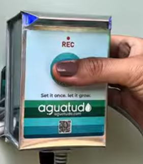
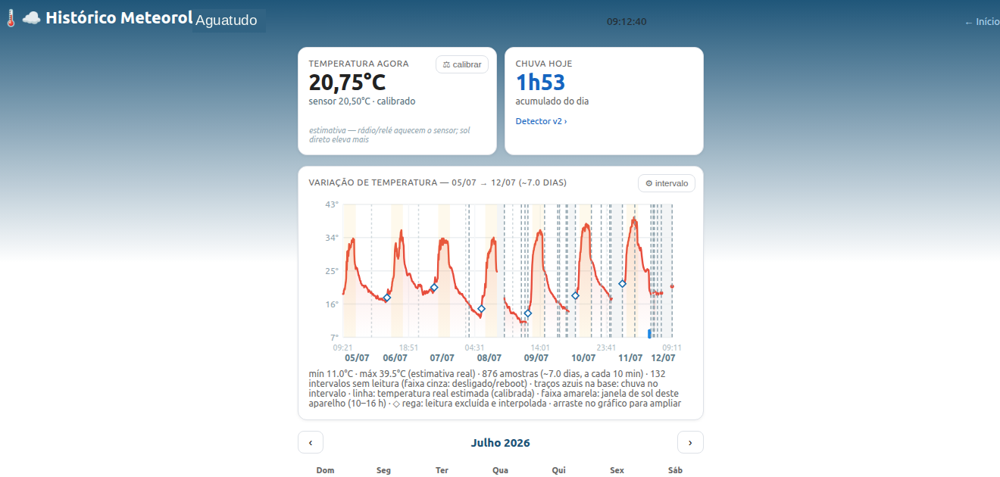
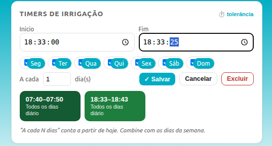
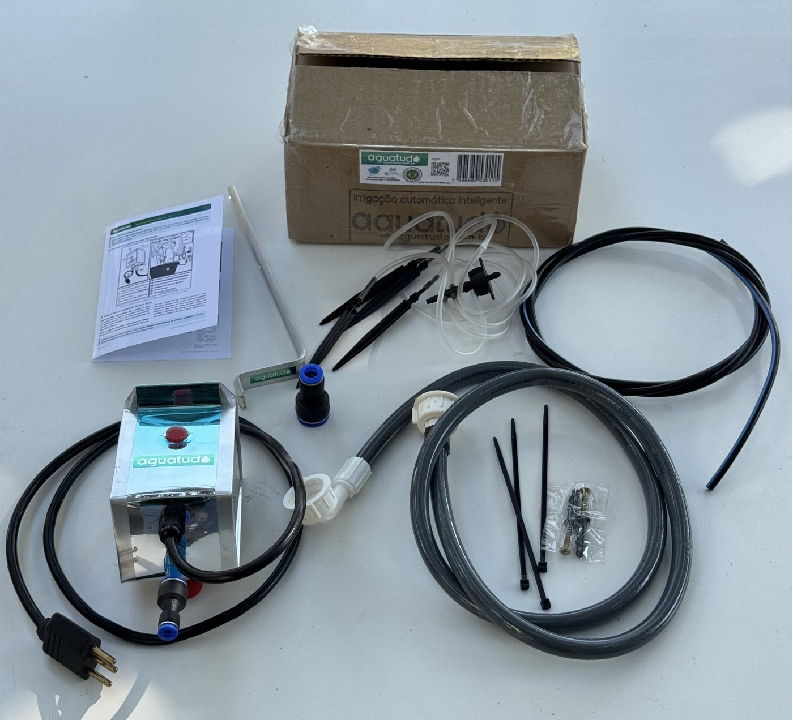

Choveu? Ele não rega em cima.
Mede a chuva no seu quintal, não a 30 km. Encurta ou cancela a rega na medida da chuva que caiu. Cada chuva aproveitada é água que você não paga.
Algumas plantas não são só plantas.
Toda a inteligência de um irrigador de ponta. A simplicidade de um botão. Sem app, sem nuvem, sem conta.
Simples de usar. Sério por dentro.
Quero o meu no primeiro lotePrimeiro lote: 90 unidades · setembro de 2026
o problema
O céu despejando água. O aspersor jogando mais por cima. O timer não sabe — ele só sabe que são 6 da manhã.
“Mas o meu consulta a previsão.” Consulta — a da sua cidade. Choveu no aeroporto e não na sua rua? Sua horta passa sede. O contrário? Rega em cima de chuva.
Você não precisa de uma previsão. Precisa de uma testemunha.
a promessa
Ele mede a chuva onde a planta está. Não a 30 km, num servidor — no seu quintal.
Tecnologia de detecção de alta durabilidade, em corpo de alumínio e vidro. Sem peças que apodrecem. Sente a chuva de verdade e faz a conta: encurta, cancela, ou mantém.
Choveu 10 minutos? A rega encurta na mesma medida. Choveu bastante? Hoje o céu trabalha. Não é chove/não-chove — é a chuva que caiu, medida.
simples assim
Uma torneira, uma tomada, um botão. Só isso. Sem app obrigatório, sem conta, sem manual de 40 páginas.
Na torneira e na tomada. Os engates do kit levam a água até o vaso. Sem ferramenta, sem cano, sem instalador.
A rega começa na sua frente. Terra no ponto? Um toque encerra. É essa rega que ele guarda.
Todo dia, mesmo horário, mesma medida. Sem você tocar em nada. A não ser que chova — aí ele poupa a água.

E ele leva a sério. Faltou luz na hora? Ao voltar, rega atrasado. Sua planta não paga pela queda de energia.
o que ele percebe
Enquanto você vive a sua vida, ele vigia duas coisas que arruínam uma planta — chuva a mais e água a menos.
Mede a chuva no seu quintal, não a 30 km. Encurta ou cancela a rega na medida da chuva que caiu. Cada chuva aproveitada é água que você não paga.
Ele aprende como é a sua rega normal. Se a válvula abre e a água não vem — registro fechado, mangueira solta, falta na rua — algo foge do padrão. O LED pisca em SOS e a tela avisa: verifique a água.
E ele fica mais esperto com você: às vezes pergunta se faltou água mesmo. Sua resposta afina o aprendizado. Menos alarme falso, mês após mês.
Uma rega que só parece ter acontecido é pior que rega nenhuma. Você confia, e a planta seca. O Aguatudo não deixa isso passar em silêncio.
status num olhar
As luzes do Aguatudo contam tudo de longe. Você passa, olha, e sabe. Nenhum concorrente conta sua história sem um aplicativo na mão.
O celular é só para quem quer mais. Para o resto, a luz basta.
a prova · parte 1
Antes de construir o Aguatudo, fomos ler o que cada alternativa realmente entrega. Não o que o anúncio promete — o que o manual admite.
R$ 872 · pilhas · uso externo
sem sensor de chuvaCusta quase um salário mínimo e não tem sensor de chuva. O que tem é um botão: você vê que choveu, você aperta, ele pausa por até 96 horas. Chamam de “Rain Delay”. Nós chamamos de você trabalhando para o timer.
~R$ 262 · vendido separado · exige 24 V
discos apodrecem em 3–5 anosNão conversa com o timer a pilha ao lado — exige instalação elétrica própria. Detecta chuva com discos de cortiça que incham quando molham. Funciona. Por 3 a 5 anos. Depois a cortiça envelhece, o sensor trava “molhado” — e existe um mercado inteiro de discos de reposição para provar o ponto.
~US$ 40 · + gateway obrigatório
confia num servidor a 30 kmSensor de chuva: nenhum. O “inteligente” é consultar a previsão de terceiros. A própria fabricante avisa: as condições reais podem diferir. No fórum oficial, usuários acham plantas molhadas na chuva — e, sem sinal, a rega não acontece.
Preço de lançamento previsto para o primeiro lote. Preços e especificações de concorrentes verificados em julho/2026, em páginas de fabricante e distribuidor.
a prova · parte 2
Nada de “economize até X%” tirado do nada. Esta é a tela de histórico de um Aguatudo em campo — a mesma que você abre no navegador, servida pelo próprio aparelho, sem nuvem e sem conta.

Repare no que ele confessa, sem que ninguém pergunte:
Captura real de um aparelho em operação · julho/2026
a diferença
Qualquer sensor barato grita “chuva!” para qualquer gota. O Aguatudo foi construído com outra postura: antes de mexer na sua rega, ele confere.
Um toque isolado de madrugada — sereno, condensação — não cancela a sua rega. Ele só acredita em chuva com confirmação: mais água em seguida, ou molhado contínuo o bastante para não restar dúvida.
Se o aspersor molha o sensor, ele sabe que foi ele mesmo — até nos minutos de gotejamento depois de fechar — e desconta. Senão a rega de hoje cancelaria a de amanhã, para sempre.
O aparelho vive no sol — é o único jeito de ver chuva. Sol esquenta sensor. Em vez de fingir que não, ele anota quais leituras sofreram interferência e destaca as leituras limpas como as mais fiéis. O gráfico mostra as duas curvas, sem maquiagem.
Caiu a energia na hora da rega? Ao voltar, ele decide. Cabe na sua tolerância (até 24 h)? Rega atrasado. Não cabe? Avisa, em vez de regar na hora errada.
Sem nuvem, sem conta, sem gateway, sem mensalidade. A programação mora no aparelho: a internet pode cair — a sua rega acontece. A interface é uma página web servida pelo próprio Aguatudo, com um botão só no hardware e luzes que mostram quanto choveu.
Temperatura mínima, média e máxima, minutos de chuva por dia — guardados no aparelho, exportáveis em CSV. É a estação meteorológica do seu quintal, sem assinatura e sem pedir licença a ninguém.
a prova mais honesta que você vai ler hoje
Para sentir a chuva, o Aguatudo precisa ficar exposto ao sol — não pode viver na sombra como um termômetro de estação. Resultado: a máxima e a média do dia saem acima da real, porque o sol bate nele.
Podíamos esconder isso. Não escondemos. O aparelho marca as horas de sol e mostra a leitura crua ao lado da estimativa corrigida. E tem uma parte que é fiel de verdade: a temperatura da noite — a mínima do dia — sem sol para atrapalhar, é precisa.
Um produto que confessa onde erra é um produto em que você pode confiar onde ele acerta.
o outro lado do disco
Você nunca vai precisar ver esta parte. Mas se você é do tipo que gosta de saber o que está acontecendo — ela está toda aqui, servida pelo próprio aparelho, sem nuvem e sem app. Ao mesmo tempo o mais simples e o mais sofisticado da prateleira.

Os outros programam em minutos. O Aguatudo trabalha em segundos. Num jarro pequeno, 25 ou 60 segundos é a diferença entre regar e alagar.
Faltou luz? Frente de chuva chegando? Você define quanto atraso ele absorve antes de decidir sozinho. Controle fino, para quem gosta.
linha superior · sensor ambiental
A mesma postura, levada adiante. Uma versão traz, dentro da carcaça, um sensor ambiental que distingue o que os aparelhos comuns confundem.
Mede o calor do próprio tubo do solenoide. Refina ainda mais o alarme de falta d’água que todo Aguatudo já tem — e enxerga o fluxo sem sensor de vazão.
Umidade que sobe de noite e seca de dia é orvalho. A que fica saturada por dias pode ser infiltração. Ele acompanha e sinaliza quando a vedação pede atenção.
A queda de pressão de uma frente faz ele esperar um pouco antes de regar. Não veio chuva? Rega assim mesmo. Previsão e medição, as duas locais.
A umidade relativa entra no calendário, ao lado da temperatura e da chuva. Sua estação meteorológica fica mais completa — e continua só sua.
Recurso da linha com sensor ambiental (opcional) — nem toda unidade o inclui. O alarme de falta d’água, esse sim, vem em todas.
nossa história
Nos anos 1980, Antonio Vendramin cuidava de um orquidário com quase dez mil vasos em Jundiaí. Levava água a cada um por microtubos, quando ninguém no Brasil fazia isso.
O Aguatudo é o neto retomando a obsessão do avô. Medir de verdade, regar na medida certa, cuidar de perto.
alcance
Engate rápido embutido no próprio aparelho: conectou, funcionou. Bailarinas, rotores, gotejadores, mangueiras gotejadoras, aspersores, micro-aspersores — se rega, encaixa. E liga direto na tomada: sem pilha para trocar, sem rega perdida por bateria fraca.

a conta que se paga
No Brasil, a conta de água sobe — e sobe em degraus: passou de certo volume, o preço de cada litro extra aumenta. É justamente o consumo que empurra você para a faixa cara que o Aguatudo corta, cancelando a rega quando o céu já fez o trabalho.
Não vamos inventar uma porcentagem que não medimos. Mas o mecanismo é simples: quem rega menos na chuva gasta menos água. Ao longo dos meses, é assim que ele se paga. Não é promessa de marketing — é a aritmética da sua conta.
em ação
primeiro lote
O Aguatudo está em pré-produção. O primeiro lote é de 90 unidades, previstas para setembro de 2026 — e não vamos inventar um estoque que não existe. O que temos é uma lista de espera com prioridade por ordem de chegada.
Sem spam. Um aviso quando o lote abrir, e só.